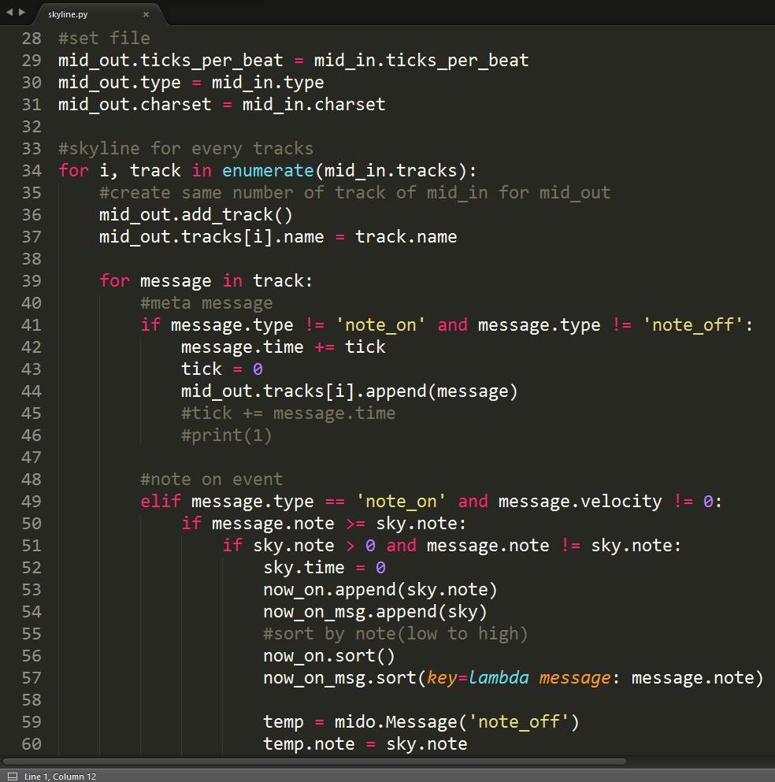

臺師大資訊研究社
2016 黃金雨季 社團博覽會
社團簡介
社團宗旨
提供一個讓所有對資訊有興趣的人可以互相交流學習，
並找到志同道合朋友的地方，
也讓那些對資訊領域有興趣，
卻不得其門而入者可以有一個加入我們的方法。
社團主要活動
- 資訊交流
- 資訊學習
- 資訊教學
社團幹部
- 社長、副社長
- 教學組
- 公關組
- 總務組
- 文書組
上學期回顧
迎新擺攤

第一次迎新茶會

社課-Javascript

社課-HTML

主題式社課

校慶擺攤

第二次迎新茶會

講座 x 服務學習


學生計算機年會
SITCON 2016

擷取自:http://sitcon.org/2016/
學生計算機年會
SITCON 2016

社員成果作品
本學期活動
本學期活動
- 迎新
- 社課
- 服務學習
- 講座
迎新
- 招募社員
- 社團介紹
- 社課介紹
- 服務學習宣傳
- 講座介紹
迎新

社課──Scratch
- 由MIT終身幼稚園組開發
- 圖像化程式組件
- 學習程式運行邏輯
- 易上手
社課──Scratch
社課──Python
- 高階動態語言
- 大量函式庫
- 強制縮排
- 用途廣泛
- 適合新手
社課──Python
社課──進度安排
| 3/14 | Scratch入門 |
| 3/21 | Scratch進階 |
| 3/28 | Scratch專案設計 |
| 4/25 | Scratch成果發表 |
| 5/2 | Python基礎資料型態與運算 |
| 5/9 | Python進階資料型態、輸入輸出與邏輯判斷 |
| 5/16 | Python迴圈與常用函式 |
| 5/23 | Python函式 |
| 5/30 | Python進階應用 |
| 6/6 | Python成果發表 |
服務學習
- 合作單位：MozTW、Wikipedia、OSSACC
- 服務時間：Anytime(每月聚會追蹤進度)
- 服務內容：
-
MozTW
翻譯技術文件
FireFox外掛移植與撰寫
Mozilla OS bug修復 -
Wikipedia
新增或修改條目內容
翻譯外文條目 -
OSSACC
軟體翻譯
系統bug修復
教育系統推廣
-
MozTW
服務學習──MozTW
- Mozilla 臺灣社群
- Mozilla 軟體中文化支援
- 推廣自由文化課程與活動
服務學習──Wikipedia
- 維基百科中文化支援
- 維基百科詞條建置與擴充
服務學習──OSSACC

- 教育部校園自由軟體數位資源推廣服務中心
- 校園自由軟體使用、推廣及教育訓練
- 建立自由合法的電腦使用環境
講座
- 預計4月下旬舉行
- Python：配合本學期課程
- 邀請資深業師演講